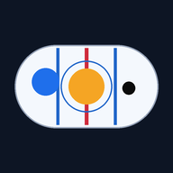

You are probably looking at this file in a preview window (the Files app, a mail
attachment preview, or a chat preview). Those viewers do not run the app.
Open it in Safari or Chrome instead, or better, use the web address your
copy is published at and add that to your Home Screen.
Something broke while starting up.

ABOVETHE PUCK
Everything on the ice is one of three things. Pick what is happening.
Create your own play
Say it or type it the way you would say it to the team, and it goes on the ice.
Squirt / U10 · 10 situations, 18 variations, and every step explained for your position.
DEFENSE
YOUR JOB
Step
PLACE YOURSELF
Step 1
You are
Next
Test finished
0 / 0
How to read the rink
One minute now, no confusion later.
1. Every situation is one of three things
DEFENSEThey have the puck. Our job is to get it back. Nobody chases the puck - everybody takes a job.
TRANSITIONThe puck just changed hands. The fastest part of hockey. Move it up the ice before they get set.
OFFENSEWe have the puck. Keep it and score. Being in the right spot matters more than being fast.
The colored word at the top of the screen always tells you which one you are in, and it changes by itself as the play moves - because that is what happens in a real game. When it changes, the Next bar under the rink offers you the situation that comes after it.
2. What the circles mean
LWNavy = your team. The letters are positions: C, LW, RW, LD, RD, G.
YOUYellow = you. Change which position you are on the right.
3Red = the other team. The numbers 1 to 5 are only name tags so you can tell them apart. They are not positions.
Black dot = the puck. Sitting on a player means that player has it.
Tiny red dots and thin red circles = paint on the ice. Faceoff dots and faceoff circles. Not players.
Dashed gray circle = where you should be. It shows up when you drag somebody.
Gray beam = your vision. Where your eyes go. The brightest, widest beam is what you look at first. Turn it off in Settings.
Thin dashed line = feet to your closest teammate. Too close means you are stacked up.
The red players have a small word under them - net front, slot, their D - so you always know who is who.
3. How to use it
Pick a situation. Pick your position. Hit Listen and it tells you the situation out loud before you look.
Hit Play and it walks the play one step at a time. Drag yourself anywhere and it tells you how far off you are.
When you think you have it, hit Quiz me.
Space play/pause · ←→ step · R reset · 1-5 switch position · Esc close
Putting it on a phone or tablet
IPAD / IPHONEOpen it in Safari, tap the Share button (the square with the arrow), scroll down and tap
Add to Home Screen. It then opens like a normal app, full screen, and works with no signal.
ANDROIDOpen it in Chrome and tap Install when it offers, or use the menu (three dots) and
Add to Home screen.
ANYShare it by sending the link. Nothing to sign up for and nothing to download from a store.
One warning worth knowing: phones clear browser storage when they run low on space.
If you build your own plays, go to Settings and save them to a file so they cannot be lost.
Settings
Turn things off if the ice looks busy.
Read it out loud
Voice
His progress
Every play he has run, as text. Copy it somewhere
safe - there is no account and no backup. Paste it back to restore.
Show on the ice
Your plays
Phones and tablets clear browser storage when they run low on space, so if you have built plays worth keeping, save them to a file.
Voice files
-
Build - · if this is not the build you just pushed, the device is serving a cached copy: pull down to refresh, or close and reopen the app.
Reading the offline cache…
Watch it for real
Menu
Everything from the top bar.
Tell me the play
Type it or say it, the way you would say it to the team.